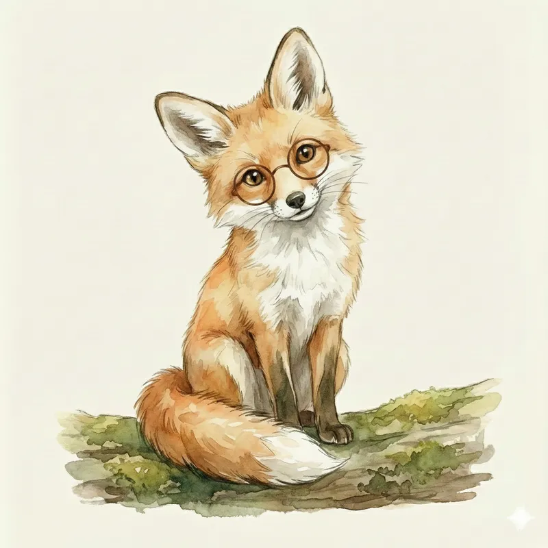

— O Ritual de Entrada (O Teatro da Mente) —
[Ação: Acenda a vela, ligue a luz ou abra a cortina. A LUZ deve ser o foco.]
Você diz:
[tom de segredo]
"Eu sou o Portador da Tocha... Hoje, a luz nos guia para a trilha de Celeste. Você está pronto para os primeiros tesouros?"
"Respire devagar... Deixe as pálpebras pesarem..."
[pausa de 3 segundos]
"Abra os olhos... Veja o rastro laranja de Celeste!"
— A Jornada (Imersão Total) —
[Cenário: Uma trilha de terra macia rodeada por carvalhos gigantes. Um vulto laranja passa correndo entre as árvores.]
Narrador:
"Você abre os olhos. Celeste, a pequena raposa, está saltando sobre as raízes! Ela parou e está olhando para você com a pata cheia de algo precioso."

Celeste:
[tom de voz vibrante e curioso]
"Oi, Viajante! Veja o que o vento trouxe! O Rei deixou cair promessas de vida no chão... olhe para a minha pata... quantas sementes você vê?"
— A Ideia Viva (O Segredo Revelado) —
Celeste:
"Os números têm alma, Viajante."
"UM é o Sol. Brilha sozinho. É a Glória Única."
"DOIS é o Abraço. É a conversa. É o 'Eu e Você'."
"TRÊS... ah, o Três é a Família! É o Nó que não desata."
"Veja suas sementes. Elas são uma pequena família morando na sua mão."
[pausa de maravilha]
VOCÊ FAZ (O Toque da Matéria):
1. Coloque 1 semente na mão da criança. "Sinta o peso do Um."
2. Coloque a segunda. "Agora elas têm companhia."
3. Coloque a terceira. "Três! A roda está completa. Omne Trium Perfectum."
4. [tom de maravilhamento] "Contemple como o Três é firme!"
— O Caminho Dourado (Mãos na Massa) —
A Missão Principal (Obrigatória):
[tom de convite nobre]
"Viajante, vamos construir o que Celeste nos mostrou?"
- Concreto: Coloque as 3 sementes na mesa. Peça para a criança separá-las em grupos (1 e 2, ou 1, 1 e 1).
- Pictórico: Dê 3 folhas (reais ou desenhadas). Peça para desenhar 3 pontinhos dourados (sementes de luz) sobre elas.
- Abstrato: Peça para mostrar 3 dedos e escondê-los rápido. "Onde foi parar o três?".
[Nota de Virtude: Parabéns. Você ativou o toque, o olho e o símbolo.]
— Se Quiser Voar (Opcional) —
Fez o Caminho Dourado? A missão está cumprida.
Só siga adiante se os olhos do Viajante pedirem "Mais!".
A Via do Corpo (Movimento Vivo):
• Ação: Dê 3 pulos de sapo. A cada pulo, grite o número: "UM! DOIS! TRÊS!".
• Desafio: Correr até a parede e tocar nela 3 vezes rápidas.
— Momento de Conversa (Narração da Alma) —
[Guarde as sementes, mas deixe uma separada. Foco no olhar e na luz acesa.]
Celeste pergunta:
"Se você encontrasse 3 tesouros na floresta, para quem você daria cada um deles? O que você faria com tanto poder?"
[pausa - respeite solenemente o tempo da criança]
Sondas de Sabedoria (Use 1 ou 2):
• "O que é mais pesado na sua mão: 1 semente ou 3?"
• "Como o 3 se parece quando está escondido nos seus dedos?"
— Despedida & Bênção —
Celeste:
[gesto de despedida nobre]
"Você tem mãos de colhedor de luz, Viajante. Guarde o Três com carinho."
(Entrega do Token): "Pegue esta semente. Guarde-a bem. Na próxima jornada, Bernardo precisará dela para plantar no Canteiro."
"Na próxima jornada, Bernardo vai te ensinar a organizar o Canteiro do Jardim. Cada pedra tem seu lugar!"
— Ritual de Encerramento (Ordem & Bênção) —
Você diz:
"O Reino adormece, mas a semente que guardamos continua viva em seu bolso e em seu coração."
"Até a próxima jornada."
[Ação: Apaguem a vela, apague a luz ou fechem a cortina. A jornada termina no silêncio.]
🏛️ Por que isso importa? (A Cátedra dos Pais)
A Cadeira do Portador da Tocha (O Toque da Verdade):
🧠 O Método (Singapore Math - Fase Enativa):
O cérebro infantil não "lê" números, ele "sente" quantidades. No método Singapura (SGP), esta é a fase Enativa. Quando a criança toca as 3 sementes, ela está construindo o conceito de Subitização (percepção imediata). Sem o toque, o "3" é uma abstração vazia; com o toque, é vida.
🕊️ A Mestra (Charlotte Mason):
"A Educação é o Cenário das Relações." (CM). Ao apresentar o 3 com beleza, você estabelece a relação da criança com a Estabilidade. O triângulo é a primeira forma firme. O universo é confiável.
🛡️ O Veredito da Graça (Sua Segurança):
Se hoje o seu pequeno Viajante não conseguiu "ver" o 3 sem contar ou se as sementes voaram pela sala, descanse. O aprendizado não é uma prova de corrida, mas um crescimento orgânico. Se ele "não alcançou" a subitização hoje, a Ideia Viva do 3 já entrou pelo tato e pela beleza. Continue focando no Hábito da Atenção Plena e no afeto; o resultado matemático é um fruto que amadurece no tempo certo, nunca sob força.